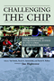
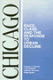
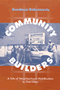
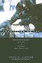
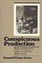

Browse
other Titles:
A B C
D E F
G H I
J K L
M N O
P Q R
S T U
V W X
Y Z |
 |
California
and the Fictions of Capital
Henderson,
George L.
304 pp • 6.125x9.25 • Spring 2003
paper 978-1-59213-198-3
|

|
Campaign Advertising and American Democracy
Franz, Michael M., Paul B. Freedman, Kenneth M. Goldstein and Travis N. Ridout
216 pp • 6x9 • Fall 2007
paper 978-1-59213-456-4
cloth 978-1-59213-455-7
|
 |
Camus
A Critical Examination
Sprintzen,
David
336 pp • 6x9 • Fall 1988
paper 978-0-87722-827-1
cloth 978-0-87722-544-7 |
 |
Cane
Fires
The Anti-Japanese Movement in Hawaii, 1865-1945
Okihiro,
Gary Y.
360 pp • 6x9 • Spring 1991
paper 978-0-87722-945-2
cloth 978-0-87722-799-1
|

|
Captain America and the Nationalist Superhero
Metaphors, Narratives, and Geopolitics
Dittmer, Jason
242 pp • 6x9 • Fall 2012
paper 978-1-4399-0977-5
cloth 978-1-4399-0976-8
|
 |
Cara
Growing with a Retarded Child
Jablow,
Martha Moraghan
250 pp • Spring 1982
paper 978-0-87722-269-9
cloth 978-0-87722-255-2 |
 |
The
Cardinals Encyclopedia
Eisenbath,
Michael, foreword by Stan Musial
652 pp • 9x12 • Spring 1999
cloth 978-1-56639-703-2
|
 |
Caribbean Currents
Caribbean Music from Rumba to Reggae
Third Edition
Manuel,
Peter with Michael Largey
360 pp • 6x9 • Fall 2016
paper 978-1-4399-1400-7
cloth 978-1-4399-1399-4
|
 |
Caribbean
Currents
Caribbean Music from Rumba to Reggae
Manuel,
Peter with Kenneth Bilby and Michael Largey
336 pp • 6x9 • Spring 2006
paper 978-1-56639-339-3
cloth 978-1-56639-338-6
|
 |
Caribbean Migration to Western Europe and the United States
Essays on Incorporation, Identity, and Citizenship
edited by Cervantes-Rodriguez, Margarita, Ramon Grosfoguel and Eric Mielants
270 pp • 6x9 • Fall 2008
cloth 978-1-59213-954-5 |
|
The
Caring Relationship
Elderly People and Their Families
Qureshi,
Hazel and Alan Walker
287 pp • Fall 1989
cloth 978-0-87722-663-5
|
 |
The
Carrot or the Stick for School Desegregation Policy
Magnet Schools or Forced Busing
Rossell,
Christine H.
272 pp • Spring 1990
paper 978-0-87722-924-7
cloth 978-0-87722-682-6 |
|
A
Case About Amy
Smith,
R. C., foreword by Frank G. Bowe
344 pp • 6x9 • Spring 1996
paper 978-1-56639-412-3
cloth 978-1-56639-411-6
|
|
The
Case Against Christianity
Martin,
Michael
288 pp • 5.5x8.25 • Spring 1991
paper 978-1-56639-081-1
cloth 978-0-87722-767-0
|
 |
Cat
Culture
The Social World of a Cat Shelter
Alger,
Janet M. and Steven F. Alger
256 pp • 5.5x8.25 • Fall 2002
paper 978-1-56639-998-2
cloth 978-1-56639-997-5
|
|
Catalog
of the Charles L. Blockson Afro-American Collection of the Temple
University Libraries
Blockson,
Charles L., introduction by Dorothy Porter Wesley
820 pp • Fall 1990
cloth 978-0-87722-749-6 |
 |
Catheters, Slurs, and Pickup Lines
Professional Intimacy in Hospital Nursing
Ruchti, Lisa C.
226 pp • 6x9 • Spring 2012
paper 978-1-4399-0753-5
cloth 978-4399-0752-8 |
 |
Catholic
Social Teaching and Economic Theory
Paradigms in Conflict
Hobgood,
Mary E., foreword by Larry L. Rasmussen
256 pp • Fall 1990
cloth 978-0-87722-754-0 |
 |
Catskill
Culture
A Mountain Rat's Memories of the Great Jewish Resort Area
Brown,
Phil
304 pp • 7x10 • Fall 1998
paper 978-1-59213-189-1
cloth 978-1-56639-642-4
|
 |
Cattle,
Capitalism, and Class
Ilparakuyo Maasai Transformations
Rigby,
Peter
272 pp • 6x9 • Fall 1992
paper 978-1-56639-204-4
cloth 978-0-87722-954-4 |

|
Celebrating Debutantes and Quinceañeras
Coming of Age in American Ethnic Communities
Rodriguez, Evelyn Ibatan
226 pp • 6x9 • Spring 2013
paper 978-1-4399-0628-6
cloth 978-1-4399-0627-9
|
|
Centuries
of Solace
Expressions of Maternal Grief in Popular Literature
Simonds,
Wendy and Barbara Katz Rothman
390 pp • 5.5x8.25 • Spring 1992
cloth 978-0-87722-931-5 |
 |
A
Century of Philadelphia Sports
Westcott,
Rich, foreword by Edward G. Rendell
400 pp • 7x10 • Spring 2001
cloth 978-1-56639-861-9
|
 |
The
Challenge of Restructuring
North American Labor Movements Respond
edited
by Jenson, Jane and Rianne Mahon
488 pp • 6x9 • Fall 1992
cloth 978-0-87722-981-0 |
 |
Challenging Perspectives on Street-Based Sex Work
edited by Hail-Jares, Katie, Corey S. Shdaimah, and Chrysanthi S. Leon
308 pp • 6x9 • Spring 2017
paper 978-1-4399-1454-0
cloth 978-1-4399-1453-3
|
|
Challenging
the Boundaries of Reform
Socialism in Burlington
Conroy,
W. J.
288 pp • Spring 1990
cloth 978-0-87722-702-1 |
|  |
Challenging
the Chip
Labor Rights and Environmental Justice in the Global Electronics
Industry
edited
by Smith, Ted, David A. Sonnenfeld and David Naguib Pellow, foreword
by Jim Hightower 376 pp � 6x9 � Spring 2006
paper 978-1-59213-330-7
cloth 978-1-59213-329-1
|
 |
Chang and Eng Reconnected
The Original Siamese Twins in American Culture
Wu, Cynthia
218 pp • 6x9 • Fall 2012
paper 978-1-4399-0869-3
cloth 978-1-4399-0868-6
|
 |
The Change Election
Money, Mobilization, and Persuasion in the 2008 Federal Elections
edited by Magleby, David B.
336 pp • 6x9 • Fall 2010
paper 978-1-4399-0339-1
cloth 978-1-4399-0338-4
|
 |
Change
from Within
Humanizing Social Welfare Organizations
edited
by Resnick, Herman and Rino J. Patti, foreword by Ronald Lippitt
350 pp • Spring 1980
paper 978-0-87722-200-2
cloth 978-0-87722-173-9 |
 |
The
Changing of the Guard
Lesbian and Gay Elders, Identity, and Social Change
Rosenfeld,
Dana
264 pp • 5.5x8.25 • Spring 2003
paper 978-1-59213-031-3
cloth 978-1-59213-030-6
|
 |
Changing
Roles in Social Work Practice
edited
by Sobey, Francine
305 pp • Spring 1978
paper 978-0-87722-096-1
cloth 978-0-87722-092-3 |
 |
Chanting
Down Babylon
The Rastafari Reader
edited
by Murrell, N. Samuel, William D. Spencer and Adrian Anthony
McFarlane
467 pp • 7x10 • Fall 1998
paper 978-1-56639-584-7
cloth 978-1-56639-583-0
|
|
Chaos
on the Shop Floor
A Worker's View of Quality, Productivity, and Management
Juravich,
Tom
160 pp • Spring 1985
paper 978-0-87722-561-4
cloth 978-0-87722-375-7 |
 |
Cheap
Amusements
Working Women and Leisure in Turn-of-the-Century New York
Peiss,
Kathy
288 pp • 5.5x8.25 • 1985
paper 978-0-87722-500-3
|
 |
Cheaper by the Hour
Temporary Lawyers and the Deprofessionalization of the Law
Brooks, Robert
234 pp • 6x9 • Spring 2011
paper 978-1-4399-0286-8
cloth 978-1-4399-0285-1
|
|  |
Chicago
Race, Class, and the Response to Urban Decline
Squires,
Gregory D., Larry Bennett, Kathleen McCourt and Philip Nyden
248 pp • Fall 1987
paper 978-0-87722-617-8
cloth 978-0-87722-487-7 |
 |
The
Chicago Cubs Encyclopedia
Holtzman,
Jerome and George Vass
568 pp • 9x12 • Spring 1997
cloth 978-1-56639-547-2 |
 |
Child,
Parent, and State
Law and Policy Reader
edited
by Humm, Randall S., Beate Anne Ort, Martin Mazen Anbari, Wendy
S. Lader and William Scott Biel
712 pp • 7x10 • Spring 1994
paper 978-1-56639-134-4
cloth 978-1-56639-133-7
|
 |
Children
in the Field
Anthropological Experiences
edited
by Cassell, Joan
288 pp • Fall 1987
paper 978-1-56639-206-8
cloth 978-0-87722-477-8 |
 |
Children
of Strangers
The Stories of a Black Family
Morgan,
Kathryn L., afterword by Otey M. Scruggs
122 pp • 5.5x8.25 • Fall 1980
paper 978-0-87722-240-8
cloth 978-0-87722-203-3 |

|
Chilean New Song
The Political Power of Music, 1960s-1973
McSherry, J. Patrice
232 pp • 6x9 • Spring 2015
paper 978-1-4399-1152-5
cloth 978-1-4399-1151-8 |
 |
Chinatown
The Socioeconomic Potential of an Urban Enclave
Zhou,
Min, foreword by Alejandro Portes
316 pp • 6x9 • Spring 1992
paper 978-1-56639-337-9
cloth 978-0-87722-934-6 |
 |
Chinese
American Transnationalism
The Flow of People, Resources, and Ideas between China and America
during the Exclusion Era
edited
by Chan, Sucheng 312 pp • 6x9 •
Fall 2005
paper 978-1-59213-435-9
cloth 978-1-59213-434-2
|
 |
Chinese Americans and the Politics of Race and Culture
edited
by Chan, Sucheng and Madeline Y. Hsu 288 pp • 6x9 • Spring 2008
paper 978-1-59213-753-4
cloth 978-1-59213-752-7
|
 |
Chinese Connections
Critical Perspectives on Film, Identity, and Diaspora
edited by Tan, See-Kam, Peter X. Feng and Gina Marchetti 320 pp • 6x9 • Fall 2008
paper 978-1-59213-268-3
cloth 978-1-59213-267-6
|
 |
The Chinese Diaspora on American Screens
Race, Sex, and Cinema
Marchetti, Gina 258 pp • 6x9 • Spring 2012
cloth 978-1-59213-518-9 |
 |
Chinese
St. Louis
From Enclave to Cultural Community
Ling,
Huping
296 pp • 6x9 • Fall 2004
paper 978-1-59213-039-9
cloth 978-1-59213-038-2
|
|
Choices and Changes
Interest Groups in the Electoral Process
Franz, Michael M.
240 pp • 5.5x8.25 • Spring 2008
paper 978-1-59213-674-2
cloth 978-1-59213-673-5
|

|
Choosing
Equality
The Case for Democratic Schooling
Bastian,
Ann, Norm Fruchter, Marilyn Gittell, Kenneth Haskins and Colin
Greer, foreword by James P. Comer
222 pp • 5.5x8.25 • Fall 1986
paper 978-0-87722-454-9
cloth 978-0-87722-438-9 |
 |
Choosing State Supreme Court Justices
Merit Selection and the Consequences of Institutional Reform
Goelzhauser, Greg
192 pp • 5.5x8.25 • Spring 2016
paper 978-1-4399-1340-6
cloth 978-1-4399-1339-0
|
 |
The
Christ Child Goes to Court
Swanson,
Wayne R.
284 pp • Fall 1989
paper 978-0-87722-958-2
cloth 978-0-87722-638-3 |
 |
Christian
Pacifism
Dombrowski,
Daniel A.
240 pp • Spring 1991
cloth 978-0-87722-802-8 |
 |
Church and State in the City
Catholics and Politics in Twentieth-Century San Francisco
Issel, William
330 pp • 6x9 • Fall 2012
paper 978-1-4399-0992-8
cloth 978-1-4399-0991-1
|
|
Cinema
16
Documents Toward a History of the Film Society
MacDonald,
Scott
488 pp • 7x10 • Fall 2001
paper 978-1-56639-924-1
cloth 978-1-56639-923-4
|
 |
Cinemas in Transition in Central and Eastern Europe after 1989
edited by Portuges, Catherine, and Peter Hames
288 pp • 6x9 • Fall 2012
cloth 978-1-59213-265-2 |
 |
Circling the Bases
Essays on the Challenges and Prospects of the Sports Industry
Zimbalist, Andrew
234 pp • 5.5x8.25 • Fall 2010
paper 978-1-4399-0283-7
cloth 978-1-4399-0282-0
|
|
Citizen
Lawmakers
The Ballot Initiative Revolution
Schmidt,
David D.
352 pp • Spring 1989
paper 978-0-87722-903-2
cloth 978-0-87722-594-2 |

|
Citizen
Lobbyists
Local Efforts to Influence Public Policy
Adams, Brian
248 pp • 5.5x8.25 • Fall 2006
paper 978-1-59213-570-7
cloth 978-1-59213-569-1
|
 |
Citizenship and Governance in a Changing City
Somerville, MA
Ostrander,
Susan A.
190 pp • 6x9 • Spring 2013
paper 978-1-4399-1013-9
cloth 978-1-4399-1012-2 |
 |
City and Environment
Boone,
Christopher G. and Ali Modarres 240 pp •
6x9 • Spring 2006
paper 978-1-59213-284-3
cloth 978-1-59213-283-6
|

|
City in a Park
A History of Philadelphia's Fairmount Park System
McClelland, James and Lynn Miller
368 pp • 8x10 • Fall 2015
cloth 978-1-4399-1208-9 |
 |
City
of Sisterly and Brotherly Loves
Lesbian and Gay Philadelphia, 1945-1972
Stein,
Marc
480 pp • 6x9 • Fall 2004
paper 978-1-59213-130-3
|
 |
The City on the Hill from Below
The Crisis of Prophetic Black Politics
Marshall, Stephen
250 pp • 6x9 • Spring 2011
paper 978-1-4399-0656-9
cloth 978-1-4399-0655-2
|

|
Civic Talk
Peers, Politics, and the Future of Democracy
Klofstad, Casey A.
200 pp • 6x9 • Fall 2010
paper 978-1-4399-0273-8
cloth 978-1-4399-0272-1
|
 |
Civilized
Body
Social Domination, Control, and Health
Freund,
Peter E. S.
166 pp • Fall 1982
cloth 978-0-87722-285-9 |
 |
Claiming
America
Constructing Chinese American Identities during the Exclusion
Era
edited
by Wong, K. Scott and Sucheng Chan
226 pp • 6x9 • Fall 1997
paper 978-1-56639-576-2
cloth 978-1-56639-575-5
|

|
Claiming the Oriental Gateway
Prewar Seattle and Japanese America
Lee, Shelley Sang-Hee
272 pp • 6x9 • Fall 2010
paper 978-1-4399-0214-1
cloth 978-1-4399-0213-4
|
 |
Class
of '66
Living in Suburban Middle America
Lyons,
Paul
288 pp • 5.5x8.25 • Fall 1994
paper 978-1-56639-214-3
cloth 978-1-56639-213-6
|
|
Class,
Culture, and the Classroom
The Student Peace Movement of the 1930s
Eagan,
Eileen
294 pp • Fall 1981
cloth 978-0-87722-236-1 |
 |
Classical
Hindu Mythology
A Reader in the Sanskrit Puranas
edited
by Dimmit, Cornelia, translated by J. A. B van Buitenen
388 pp • 6x9 • Spring 1978
paper 978-0-87722-122-7
cloth 978-0-87722-117-3
|

|
Cleavage Politics and the Populist Right
The New Cultural Conflict in Western Europe
Bornschier, Simon
260 pp • 6x9 • Spring 2010
cloth 978-1-4399-0192-2 |
 |
The
Cleveland Indians Encyclopedia
Schneider,
Russell
584 pp • 9x12 • Spring 1996
cloth 978-1-56639-405-5 |
 |
Closing
the Book on Homework
Enhancing Public Education and Freeing Family Time
Buell,
John
176 pp • 5.5x8.25 • Fall 2003
paper 978-1-59213-218-8
cloth 978-1-59213-217-1
|

|
Closure
The Rush to End Grief and What It Costs Us
Berns, Nancy
228 pp • 6x9 • Fall 2011
paper 978-1-4399-0577-7
cloth 978-1-4399-0576-0
|
|
Club Modernity for Reluctant Christians
Swidler, Leonard
160 pp • 6x9 • Fall 2011
paper 978-0-931214-12-7 |
 |
Cocaine
Changes
The Experience of Using and Quitting
Waldorf,
Dan, Craig Reinarman and Sheigla Murphy
336 pp • 5.5x8.25 • Fall 1991
paper 978-1-56639-013-2
cloth 978-0-87722-863-9 |

|
Cold War in a Hot Zone
The United States Confronts Labor and Independence Struggles in the British West Indies
Horne, Gerald
272 pp • 6x9 • Spring 2007
paper 978-1-59213-628-5
cloth 978-1-59213-627-8
|
 |
Color
and Consciousness
An Essay in Metaphysics
Landesman,
Charles
149 pp • Spring 1989
cloth 978-0-87722-616-1 |
 |
Coming
of Age in Buffalo
Youth and Authority in the Postwar Era
Graebner,
William
200 pp • Fall 1989
paper 978-1-56639-197-9
cloth 978-0-87722-629-1 |
|
Commentary
in American Life
edited
by Friedman, Murray
232 pp • 6x9 • Spring 2005
paper 978-1-59213-106-8
cloth 978-1-59213-105-1
|
|
Common
Sense about Police Review
Perez,
Douglas W.
336 pp • 6x9 • Spring 1994
paper 978-1-56639-336-2
cloth 978-1-56639-132-0
|
 |
Communities
in Economic Crisis
Appalachia and the South
edited
by Gaventa, John, Barbara Ellen Smith and Alex Willingham
336 pp • Fall 1989
paper 978-0-87722-650-5
cloth 978-0-87722-649-9 |

|
Communities and Crime
An Enduring American Challenge
Wilcox, Pamela, Francis T. Cullen, and Ben Feldmeyer
282 pp • 6x9 • Fall 2017
paper 978-1-59213-974-3
cloth 978-1-59213-973-6
|

|
Community
Builders
A Tale of Neighborhood Mobilization in Two Cities
Rabrenovic,
Gordana
248 pp • 6x9 • Spring 1996
paper 978-1-56639-410-9
cloth 978-1-56639-409-3
|

|
Community Gardening
A PHS Handbook
Pennsylvania Horticultural Society
132 pp • 8.5x8.5 • Fall 2011
paper 978-0-615-40150-8 |
|
The Company We Keep
Occupational Community in the High-Tech Network Society
Marschall, Daniel
204 pp • 6x9 • Spring 2012
paper 978-1-4399-0756-6
cloth 978-1-4399-0755-9 |
 |
Comparable
Worth and Wage Discrimination
Technical Possibilities and Political Realities
Remick,
Helen
320 pp • Spring 1984
paper 978-0-87722-385-6
cloth 978-0-87722-345-0 |
 |
A
Complex Sorrow
Reflections on Cancer and an Abbreviated Life
Paget,
Marianne A., edited by Marjorie L. DeVault
176 pp • 5.5x8.25 • Spring 1993
paper 978-1-56639-192-4
cloth 978-1-56639-041-5 |

|
Comprehending
Columbine
Larkin, Ralph W.
264 pp • 6x9 • Fall 2006
paper 978-1-59213-491-5
cloth 978-1-59213-490-8
|
|
Computer
Applications in the Social Sciences
Brent,
Jr., Edward and Ronald E. Anderson
384 pp • 6x9 • Fall 1989
cloth 978-0-87722-666-6
|
 |
Computers,
Minds, and Robots
Robinson,
William S.
230 pp • 6x9 • Spring 1992
paper 978-1-56639-082-8
cloth 978-0-87722-915-5 |
 |
Conceiving Masculinity
Male Infertility, Medicine, and Identity
Barnes, Liberty Walther
228 pp • 5.5x8.25 • Spring 2014
paper 978-1-43991-042-9
cloth 978-1-43991-041-2 |
 |
The Concept of the Social in Uniting the Humanities and Social Sciences
Brown, Michael E.
538 pp • 6x9 • Spring 2014
paper 978-1-4399-1016-0
cloth 978-1-43991-015-3
|

|
The
Concept of the Spiritual
An Essay in First Philosophy
Smith,
Steven G.
336 pp • Fall 1988
cloth 978-0-87722-553-9 |
|
Concepts
of Reduction in Physical Science
Spector,
Marshall
200 pp • Spring 1978
paper 978-0-87722-127-2
cloth 978-0-87722-131-9 |

|
Concise
Historical Atlas of Pennsylvania
edited
by Muller, Edward K.
48 pp • Fall 1989
paper 978-0-87722-672-7 |

|
Confronting
the Margaret Mead Legacy
Scholarship, Empire, and the South Pacific
edited
by Foerstel, Lenora and Angela Gilliam
309 pp • Fall 1991
paper 978-1-56639-261-7
cloth 978-0-87722-886-8 |

|
Connection
on the Ice
Environmental Ethics in Theory and Practice
Clayton,
Patti H., photographs by Charles Mason
352 pp • 6x9 • Spring 1998
paper 978-1-56639-616-5
cloth 978-1-56639-615-8
|

|
Consider
and Hear Me
Voices from Palestine and Israel
Slapikoff,
Saul A.
240 pp • 5.5x8.25 • Fall 1992
paper 978-0-87722-983-4
cloth 978-0-87722-982-7 |

|
Conspicuous
Production
Automobiles and Elites in Detroit, 1899-1933
Davis,
Donald Finlay
320 pp • Fall 1988
cloth 978-0-87722-549-2 |
|
Constructing Muslims in France
Discourse, Public Identity, and the Politics of Citizenship
Fredette, Jennifer
222 pp • 6x9 • Fall 2013
paper 978-1-4399-1029-0
cloth 978-1-4399-1028-3 |

|
Constructing the Enemy
Empathy/Antipathy in U.S. Literature and Law
Srikanth, Rajini
220 pp • 6x9 • Fall 2011
paper 978-1-4399-0324-7
cloth 978-1-4399-0323-0
|
|
Constructing
the Urban Culture
American Cities and City Planning, 1800-1920
Schultz,
Stanley K.
400 pp • Spring 1989
cloth 978-0-87722-587-4 |

|
Consumed
in the City
Observing Tuberculosis at Century's End
Draus,
Paul
304 pp • 6x9 • Spring 2004
paper 978-1-59213-249-2
cloth 978-1-59213-248-5
|
 |
Consuming Catastrophe
Mass Culture in America's Decade of Disaster
Recuber, Timothy
228 pp • 5.5x8.25 • Fall 2016
paper 978-1-4399-1370-3
cloth 978-1-4399-1369-7 |

|
Consuming Work
Youth Labor in America
Besen-Cassino, Yasemin
202 pp • 6x9 • Fall 2013
paper 978-1-4399-0949-2
cloth 978-1-4399-0948-5 |

|
Contemporary
Asian American Communities
Intersections and Divergences
edited
by V�, Linda Trinh and Rick Bonus
264 pp • 7x10 • Spring 2002
paper 978-1-56639-938-8
cloth 978-1-56639-937-1
|

|
Contemporary Chinese America
Immigration, Ethnicity, and Community Transformation
Zhou, Min
328 pp • 6x9 • Spring 2009
paper 978-1-59213-858-6
cloth 978-1-59213-857-9
|

|
Contemporary Social Constructionism
Key Themes
Weinberg, Darin
214 pp • 5.5x8.25 • Spring 2014
paper 978-1-4399-0925-6
cloth 978-1-43990-924-9
|

|
Contested
Lands
Mason,
Robert J.
256 pp • 6x9 • Spring 1992
cloth 978-0-87722-925-4 |

|
Controlling
the Federal Bureaucracy
Riley,
Dennis D.
216 pp • Spring 1987
paper 0-87722-704-7
EAN 978-0-87722-704-5
cloth 0-87722-455-2
EAN 978-0-87722-455-6 |

|
Conversions
A Philosophic Memoir
Rosenthal,
Abigail L.
296 pp • 6x9 • Fall 1994
paper 978-1-56639-220-4
cloth 978-1-56639-219-8
|

|
The Coolie Speaks
Chinese Indentured Laborers and African Slaves in Cuba
Yun, Lisa
336 pp • 6x9 • Fall 2007
paper 978-1-59213-582-0
cloth 978-1-59213-581-3
|
|
A
Coping with Abundance
Energy and the Environment in Industrial America
Melosi,
Martin V.
304 pp • Fall 1984
cloth 978-0-87722-372-6 |

|
Coping
with Poverty
Pentecostals and Christian Base Communities in Brazil
Mariz,
Cec�lia Loreto
208 pp • 5.5x8.25 • Fall 1993
paper 978-1-56639-113-9
cloth 978-1-56639-112-2 |

|
The Cost of Being a Girl
Working Teens and the Origins of the Gender Wage Gap
Besen-Cassino, Yasemin
238 pp • 6x9 • Fall 2017
paper 978-1-4399-1349-9
cloth 978-1-4399-1348-2 |

|
Countervisions
Asian American Film Criticism
edited
by Hamamoto, Darrell Y. and Sandra Liu
317 pp • 7x10 • Spring 2000
paper 978-1-56639-776-6
cloth 978-1-56639-775-9 |
|
Counties
in Court
Jail Overcrowding and Court-Ordered Reform
Welsh,
Wayne N.
288 pp • 6x9 • Fall 1995
paper 978-1-56639-341-6
cloth 978-1-56639-340-9
|

|
Courts,
Liberalism, and Rights
Gay Law and Politics in the United States and Canada
Pierceson,
Jason
264 pp • 6x9 • Fall 2005
paper 978-1-59213-401-4
cloth 978-1-59213-400-7
|
|
Covering
Accident Costs
Insurance, Liability, and Tort Reforms
Rahdert,
Mark C.
264 pp • 6x9 • Fall 1994
paper 978-1-56639-233-4
cloth 978-1-56639-232-7 |

|
Cowboys
as Cold Warriors
The Western and U.S. History
Corkin,
Stanley
288 pp • 6x9 • Spring 2004
paper 978-1-59213-254-6
cloth 978-1-59213-253-9
|

|
Creating a Buddhist Community
A Thai Temple in Silicon Valley
Bao, Jiemin
204 pp • 5.5x8.25 • Spring 2015
paper 978-1-4399-0955-3
cloth 978-1-4399-0954-6 |

|
Creating
a New World Economy
Forces of Change and Plans for Action
edited
by Epstein, Gerald, Julie Graham and Jessica Nembhard, foreword
by Samuel Bowles
496 pp • 6x9 • Fall 1993
paper 978-1-56639-054-5
cloth 978-1-56639-053-8 |

|
Creating
the Countryside
The Politics of Rural and Environmental Discourse
edited
by DuPuis, E. Melanie and Peter Vandergeest
360 pp • 6x9 • Fall 1995
paper 978-1-56639-360-7
cloth 978-1-56639-359-1
|

|
Credit
Where It's Due
Development Banking for Communities
Parzen,
Julia Ann and Michael Hall Kieschnick
288 pp • 5.5x8.25 • Fall 1992
paper 978-1-56639-185-6
cloth 978-0-87722-811-0 |

|
Creolizing Contradance in the Caribbean
Manuel, Peter
288 pp • 6x9 • Spring 2009
paper 978-1-59213-735-0
cloth 978-1-59213-734-3
|
|
Crime
and Capitalism
Readings in Marxist Crimonology
edited
by Greenberg, David F.
776 pp • 6x9 • Spring 1993
paper 978-1-56639-026-2
cloth 978-1-56639-025-5 |

|
Crime
and Family
Selected Essays of Joan McCord
McCord, Joan, introduction by David Farrington, foreword by
Geoffrey Sayre-McCord
320 pp • 6x9 • Fall 2006
paper 978-1-59213-558-5
cloth 978-1-59213-557-8
|

|
Criminology and Public Policy
Putting Theory to Work
Barlow, Hugh and Scott Decker
306 pp • 6x9 • Fall 2009
paper 978-1-4399-0007-9
cloth 978-1-4399-0006-2
|
|
The
Crisis of American Labor
Operation Dixie and the Defeat of the CIO
Griffith,
Barbara S.
240 pp • Fall 1987
cloth 978-0-87722-503-4 |

|
The
Crisis of Growth Politics
Cleveland, Kucinich, and the Challenge of Urban Populism
Swanstrom,
Todd
328 pp • Spring 1985
paper 978-0-87722-562-1
cloth 978-0-87722-366-5 |

|
Critical
Perspectives on Housing
edited
by Bratt, Rachel G., Chester Hartman and Ann Meyerson
600 pp • Fall 1985
paper 978-0-87722-396-2
cloth 978-0-87722-395-5 |

|
Critical Race Theory
The Cutting Edge
Third Edition
edited
by Delgado, Richard and Jean Stefancic
856 pp • 7x10 • Spring 2013
paper 978-1-4399-1061-0
cloth 978-1-4399-1060-3
|

|
Critical
Studies in Organization and Bureaucracy
edited
by Fischer, Frank and Carmen Sirianni
704 pp • 6x9 • Fall 1993
paper 978-1-56639-122-1
cloth 978-1-56639-121-4
|

|
The
Critical Study of Work
Labor, Technology, and Global Production
edited
by Baldoz, Rick, Charles Koeber and Philip Kraft
296 pp • 7x10 • Spring 2001
paper 978-1-56639-798-8
cloth 978-1-56639-797-1
|

|
Critical
White Studies
Looking Behind the Mirror
edited
by Delgado, Richard and Jean Stefancic
704 pp • 7x10 • Spring 1997
paper 978-1-56639-532-8
cloth 978-1-56639-531-1
|

|
Critique
of Applied Ethics
Reflections and Recommendations
Edel,
Abraham, Elizabeth Flower and Finbarr W. O’Connor
288 pp • 6x9 • Spring 1994
paper 978-1-56639-158-0
cloth 978-1-56639-157-3 |

|
Crossing
the Neoliberal Line
Pacific Rim Migration and the Metropolis
Mitchell,
Katharyne
296 pp • 6x9 • Fall 2004
paper 978-1-59213-084-9
cloth 978-1-59213-083-2
|

|
Crossroads,
Directions, and a New Critical Race Theory
edited
by Valdes, Francisco, Jerome McCristal Culp and Angela P. Harris
440 pp • 7x10 • Fall 2001
paper 978-1-56639-930-2
cloth 978-1-56639-929-6
|

|
Crowding
Out Latinos
Mexican Americans in the Public Consciousness
Portales,
Marco
240 pp • 6x9 • Fall 1999
paper 978-1-56639-743-8
cloth 978-1-56639-742-1
|

|
The
Cry and the Dedication
Bulosan,
Carlos, edited by E. San Juan, Jr.
344 pp • 6x9 • Spring 1995
paper 978-1-56639-296-9
cloth 978-1-56639-295-2
|

|
The Cubans of Union City
Immigrants and Exiles in a New Jersey Community
Prieto, Yolanda
224 pp • 6x9 • Spring 2009
paper 978-1-59213-300-0
cloth 978-1-59213-299-7
|

|
Culinary Fictions
Food in South Asian Diasporic Culture
Mannur, Anita
272 pp • 6x9 • Fall 2009
paper 978-1-4399-0078-9
cloth 978-1-4399-0077-2
|

|
The
Cult of the Court
Brigham,
John
280 pp • Fall 1987
paper 978-0-87722-828-8
cloth 978-0-87722-486-0
|

|
Cultural
Citizenship
Cosmopolitanism, Consumerism, and Television in a Neoliberal
Age
Miller, Toby
248 pp • 6x9 • Fall 2006
paper 978-1-59213-561-5
cloth 978-1-59213-560-8
|

|
Cultural
Compass
Ethnographic Explorations of Asian America
edited
by Manalansan, IV, Martin F.
272 pp • 7x10 • Spring 2000
paper 978-1-56639-773-5
cloth 978-1-56639-772-8
|

|
Cultural
Connections
Museums and Libraries of the Delaware Valley
Vogel,
Morris J.
256 pp • Fall 1991
cloth 978-0-87722-840-0 |

|
Cultural
Politics and Social Movements
edited
by Darnovsky, Marcy, Barbara Epstein and Richard Flacks
384 pp • 6x9 • Fall 1995
paper 978-1-56639-323-2
cloth 978-1-56639-322-5
|

|
Customizing
the Body
The Art and Culture of Tattooing
Sanders,
Clinton R. and D. Angus Vail
Revised and Expanded Edition
280 pp • 5.5x8.25 • Spring 2008
paper 978-1-59213-888-3
cloth 978-1-59213-887-6
|

|
Cuttin'
the Body Loose
Historical, Biological, and Personal Approaches to Death and Dying
Gavin,
William Joseph
256 pp • 5.5x8.25 • Spring 1995
paper 978-1-56639-298-3
cloth 978-1-56639-297-6 |